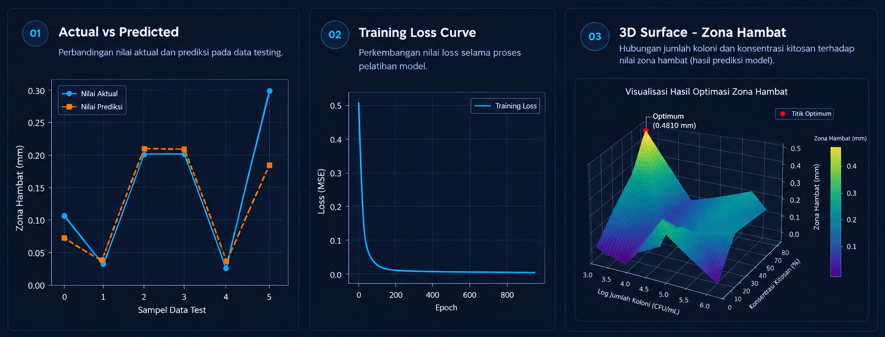

FEATURED MACHINE LEARNING PROJECT
Proyek penelitian yang menerapkan Artificial Neural Network (ANN) untuk mempelajari hubungan antara jumlah koloni Staphylococcus aureus, konsentrasi kitosan, dan zona hambat berdasarkan dataset penelitian.
PROJECT OVERVIEW
Proyek ini merupakan penelitian berbasis data yang menerapkan Artificial Neural Network (ANN) untuk mempelajari hubungan antara jumlah koloni Staphylococcus aureus, konsentrasi kitosan, dan zona hambat berdasarkan dataset penelitian.
Dataset terdiri dari 60 observasi dengan dua variabel input dan satu variabel target. Proses analisis mencakup data preparation, transformasi data, pembagian dataset, standardisasi, pemodelan ANN, serta evaluasi performa model menggunakan MSE dan R².
Model kemudian digunakan untuk melakukan prediksi dan mengeksplorasi kombinasi variabel input dalam ruang data yang diamati.
Membangun model Artificial Neural Network untuk memprediksi zona hambat berdasarkan jumlah koloni dan konsentrasi kitosan serta mengeksplorasi pola hubungan antarvariabel dalam dataset.
DATASET
Jumlah koloni S. aureus digunakan sebagai salah satu variabel input dalam pemodelan.
Konsentrasi kitosan digunakan sebagai variabel input untuk mempelajari hubungan perubahan konsentrasi terhadap zona hambat.
Zona hambat digunakan sebagai variabel target atau output yang diprediksi oleh model Artificial Neural Network.
METHODOLOGY
Dataset disusun berdasarkan tiga variabel utama, yaitu jumlah koloni, konsentrasi kitosan, dan zona hambat.
Transformasi logaritmik diterapkan pada variabel jumlah koloni untuk merepresentasikan skala data dengan lebih proporsional sebelum proses pemodelan.
Dataset dibagi menjadi data training, validation, dan testing dengan rasio 80%, 10%, dan 10%.
Variabel input distandarisasi menggunakan StandardScaler dengan parameter yang ditentukan dari data training.
Model Artificial Neural Network dilatih untuk mempelajari pola hubungan antara variabel input dan zona hambat.
MODEL ARCHITECTURE
Arsitektur model dirancang untuk mempelajari hubungan antara dua variabel input dengan nilai zona hambat sebagai output.
8 Neurons · ReLU Activation
Predicted Output
MODEL CONFIGURATION
MODEL PERFORMANCE
Performa model dievaluasi menggunakan Mean Squared Error (MSE) dan coefficient of determination (R²) pada data training, validation, dan testing.
Evaluation on unseen test data
Hasil evaluasi menunjukkan bahwa model mampu mempelajari pola hubungan antara variabel input dan zona hambat dari dataset yang digunakan. Evaluasi pada data testing menghasilkan nilai MSE sebesar 0.0026 dan R² sebesar 0.7884.
Perbedaan performa antar pembagian data perlu dipahami dalam konteks ukuran dataset yang terbatas. Oleh karena itu, hasil model digunakan sebagai pendekatan prediktif dan eksploratif dalam ruang data yang diamati.
MODEL VISUALIZATION
Visualisasi proses pelatihan dan hasil pemodelan Artificial Neural Network, termasuk training loss, perbandingan nilai aktual dan prediksi, serta eksplorasi hubungan antarvariabel dalam ruang input yang dimodelkan.

Visualisasi memberikan gambaran mengenai proses dan hasil pemodelan Artificial Neural Network, termasuk perubahan training loss serta perbandingan nilai aktual dan prediksi pada data pengujian.
Visualisasi permukaan tiga dimensi menunjukkan hubungan antara jumlah koloni, konsentrasi kitosan, dan prediksi zona hambat. Eksplorasi ini digunakan untuk membantu mengidentifikasi pola dan kombinasi input dalam ruang data yang diamati.
PREDICTION & EXPLORATION
Predicted Zone of Inhibition
Nilai 0.4809 mm merupakan hasil prediksi model pada kombinasi input yang dieksplorasi dalam ruang data penelitian. Hasil ini digunakan sebagai referensi komputasional untuk membantu mengidentifikasi kandidat kombinasi input sebelum dilakukan verifikasi eksperimental lebih lanjut.
PROJECT CONCLUSION
Proyek ini menunjukkan penerapan proses pemodelan berbasis data mulai dari data preparation hingga evaluasi dan eksplorasi hasil model.
Menyiapkan dataset, melakukan transformasi data, serta membagi data menjadi training, validation, dan testing sebelum proses pemodelan.
Membangun model Artificial Neural Network dengan arsitektur 2–8–1 untuk mempelajari hubungan antara variabel input dan zona hambat.
Mengevaluasi performa model menggunakan Mean Squared Error (MSE) dan R² pada data training, validation, dan testing.
Mengeksplorasi kombinasi variabel input berdasarkan pola yang dipelajari model dalam ruang data yang diamati.
Artificial Neural Network digunakan sebagai pendekatan komputasional untuk mempelajari pola hubungan antarvariabel dalam dataset dan menghasilkan prediksi berdasarkan pola yang dipelajari.
Model juga digunakan untuk mengeksplorasi kombinasi variabel input dalam ruang data yang diamati. Hasil eksplorasi digunakan sebagai referensi awal sebelum dilakukan verifikasi eksperimental lebih lanjut.
TECHNOLOGY
Programming & Data Processing
Data Processing
Numerical Computing
Data Visualization
Machine Learning
PROJECT RESULT
Project ini menghasilkan pipeline pemodelan yang mencakup data preparation, preprocessing, Artificial Neural Network, evaluasi model, dan eksplorasi prediksi.
Hasil model digunakan untuk memahami pola hubungan antarvariabel dan mengeksplorasi kombinasi input dalam ruang data yang diamati.
← Back to Projects